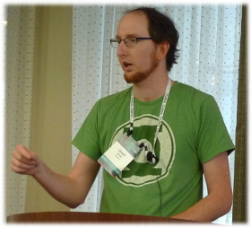

Testing power failures
Trying to replicate failures that can happen in filesystems when the power suddenly fails was the topic of a discussion led by Josef Bacik at the 2015 LSFMM Summit. He has been working on a tool based on the device mapper to try to make power-failure scenarios more reproducible, but he was wondering if he should continue that work or shift to something else.
In Btrfs, he believes there are ways that the balancing operation can lead to a corrupted filesystem if there is a power failure at just the "right" moment. He has not caught it yet, but the problem has inspired the development of a new tool. It uses the device mapper and two disks, one of which is the normal filesystem and the other keeps a log of all the writes that go to the first disk. The log disk keeps a list of all the write operations that have completed, which is updated with each flush operation to the first disk.

The tool has been integrated into xfstests and works for ext4 and XFS as well as Btrfs. It does take a good bit longer on those other two filesystems, but it works. The idea is to be able to test "weird interactions", where the filesystem is fine at point A and at point B but, if the power fails in between those points, the filesystem gets corrupted. Bacik asked: does this log approach make sense?
Someone asked about using fault injection instead. But Bacik wants these tests to be generic for any filesystem without adding code to the kernel. Logging allows for replaying the problem. It is also finer-grained, as you can check the filesystem consistency at each flush.
He would like others to look at his assumptions to help ensure he isn't off base. He is only logging information for write operations that have completed. The tool drops all writes that have not completed at flush time.
There was a suggestion that blktrace could be changed to log the data that is being written. Bacik seemed to be leaning toward dropping his tool in favor of that, but Chris Mason wondered about maintaining the ordering of writes using blktrace. One attendee said that blktrace has sequence numbers that are maintained per-CPU but are not synchronized, so the order of the writes may not be preserved. Since the device mapper does preserve that order, Bacik concluded that he would finish up that tool, rather than switch.
[I would like to thank the Linux Foundation for travel support to Boston
for the summit.]
| Index entries for this article | |
|---|---|
| Kernel | Development tools/Testing |
| Conference | Storage, Filesystem, and Memory-Management Summit/2015 |